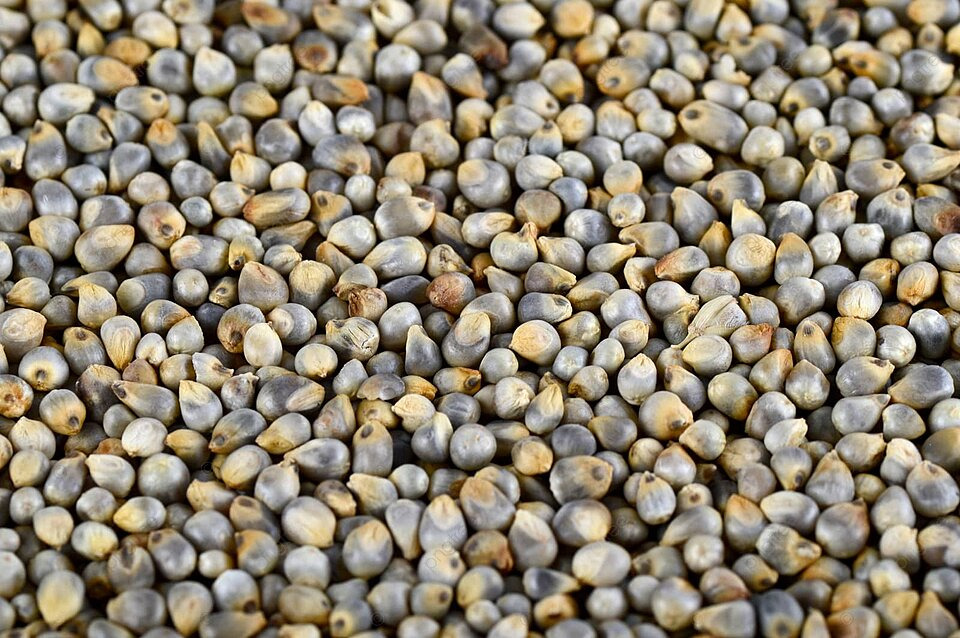

1. Seasons for Growing Bajra

Bajra, also known as Pearl Millet, is a warm-season crop that thrives in arid and semi-arid regions. The best seasons for growing Bajra are:
- Summer: Bajra is primarily sown in the summer season. It requires hot and dry conditions for optimal growth.
- Monsoon: In regions with reliable monsoon rainfall, Bajra can be planted with the onset of monsoons for a bountiful harvest.
- Post-Monsoon: In areas with mild winters, Bajra can also be grown post-monsoon, provided there is adequate irrigation.